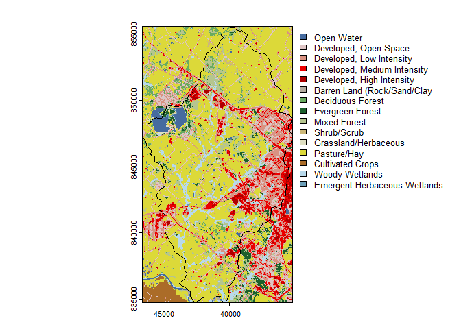
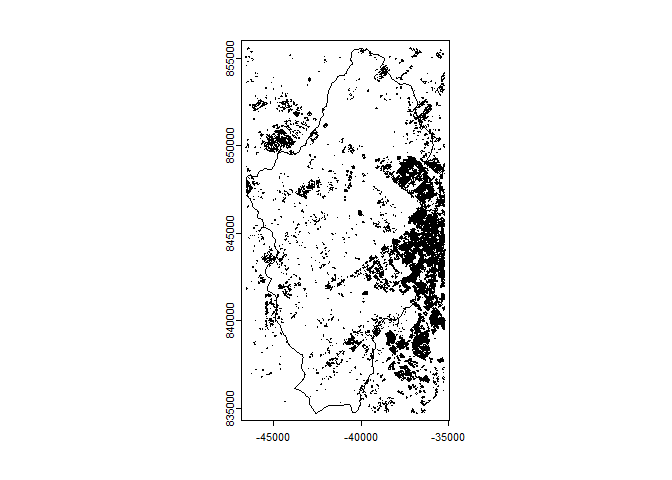
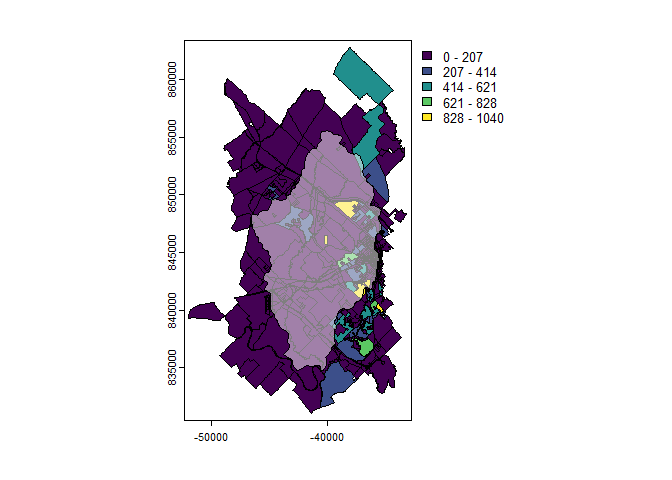
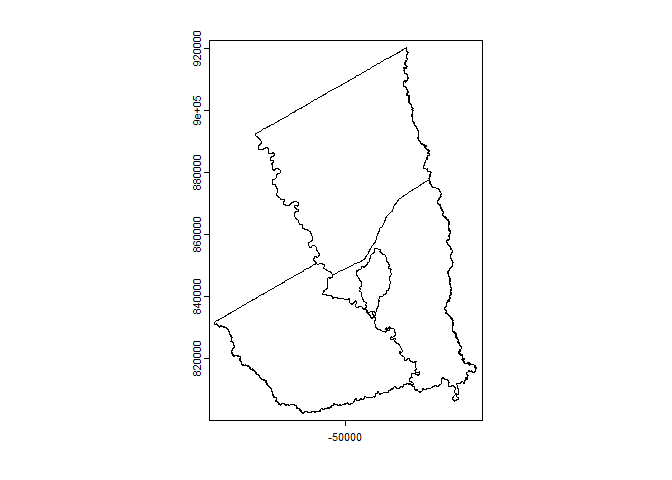
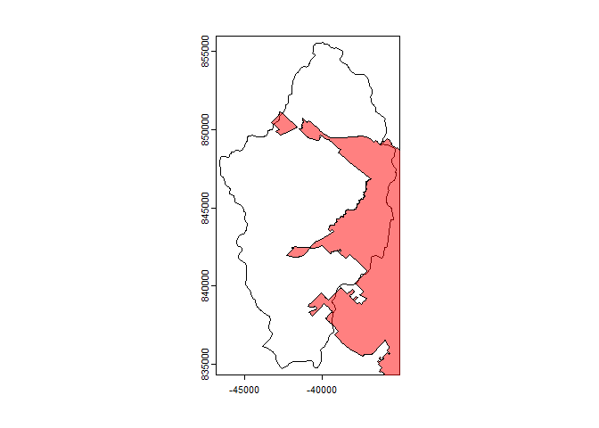
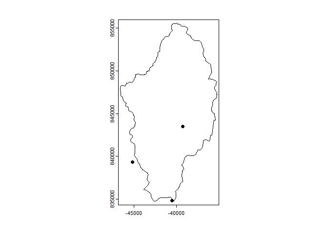

SELECTRdata provides convenience functions for downloading raster and tabular data used in the Spatially Explicit Load Enrichment Calculation Tool (SELECT). By providing a SpatRaster object of the target watershed, functions are available to download cropped:
- National Land Cover Dataset
- FEMA USA Structures
- Census Blocks
- TIGER County Boundaries
- USDA Agricultural Census
- EPA NPDES Permits
- U.S. Census Bureau Urbanized Areas
Installation
You can install the development version of SELECTRdata like so:
install.packages("SELECTRdata", repos = c("https://txwri.r-universe.dev", "https://cloud.r-project.org"))MRLC National Land Cover Dataset
library(SELECTRdata)
library(terra)
#> Warning: package 'terra' was built under R version 4.3.3
#> terra 1.8.10
## we need a template file, this is the thomsoncreek watershed in Texas
dem <- system.file("extdata", "thompsoncreek.tif", package = "SELECTRdata")
dem <- terra::rast(dem)
gpkg <- system.file("extdata", "thompsoncreek.gpkg", package = "SELECTRdata")
wbd <- terra::vect(gpkg, layer = "wbd")
dem <- terra::mask(dem, wbd,
filename = tempfile(fileext = ".tif"))
## download the NLCD file cropped to the extents of the watershed
nlcd <- SELECTRdata::download_nlcd(template = dem,
overwrite = TRUE,
progress = 1)
#> |---------|---------|---------|---------|=========================================
plot(nlcd)
plot(wbd, add = TRUE)
FEMA US Buildings
buildings <- download_buildings(template = dem)
#> Registered S3 method overwritten by 'jsonify':
#> method from
#> print.json jsonlite
#> Iterating ■■■■■ 12% | ETA: 19sIterating ■■■■■■■■■ 25% | ETA: 11sIterating
#> ■■■■■■■■■■■■■■■■ 50% | ETA: 4sIterating ■■■■■■■■■■■■■■■■■■■■■■■ 75% | ETA:
#> 2sIterating ■■■■■■■■■■■■■■■■■■■■■■■■■■■ 88% | ETA: 1s
plot(buildings)
plot(wbd, add = TRUE)
U.S. Census Blocks
Includes housing unit and population data.
cen_blocks <- download_census_blocks(dem, "2020")
plot(cen_blocks, "P0010001")
plot(wbd, col = "white", alpha = 0.5, add = TRUE)
TIGER Counties
County boundaries cropped to coastlines.
counties <- download_counties(dem)
plot(counties)
plot(wbd, add = TRUE)
Urbanized Areas
U.S. Census designated urban areas from the 2020 U.S. Census.
ua <- download_urban_areas(dem)
plot(wbd)
plot(ua, col = "red", alpha = 0.5, add = TRUE)
NPDES Permits
npdes <- download_NPDES_permits(dem)
#> ℹ Query returned 3 results!
plot(wbd)
plot(npdes, add = TRUE)